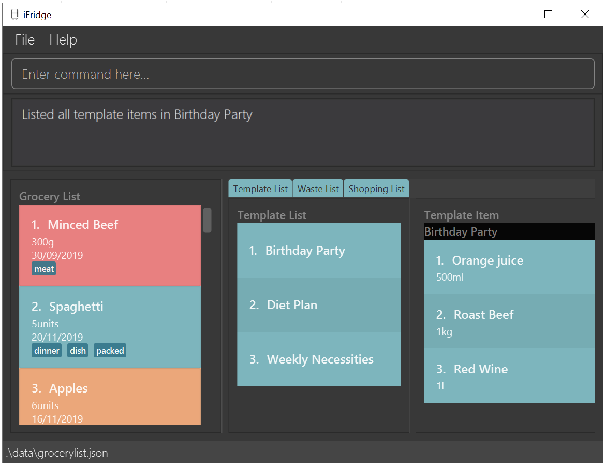

By: Team SE-EDU Since: Jun 2016 Licence: MIT
- 1. Introduction
- 2. Quick Start
- 3. Features
- 3.1. Viewing help :
help - 3.2. System Management
- 3.3. Grocery List Management
- 3.3.1. Adding a food item:
glist add - 3.3.2. Listing all grocery items:
glist list - 3.3.3. Deleting a grocery item:
glist delete - 3.3.4. Use a grocery item:
glist use - 3.3.5. Edit a grocery item:
glist edit - 3.3.6. Sort the grocery list:
glist sort - 3.3.7. Finding items by keywords:
glist find - 3.3.8. Checking reminders on expiry dates:
glist rem - 3.3.9. Undo Grocery List:
glist undo - 3.3.10. Redo Grocery List:
glist redo
- 3.3.1. Adding a food item:
- 3.4. Waste List Management
- 3.5. Templates List Management
- 3.6. Template Management
- 3.7. Shopping List Management
- 3.7.1. Add new item to shopping list:
slist add - 3.7.2. Add items in template into shopping list:
slist addTemp - 3.7.3. Edit item in shopping list:
slist edit - 3.7.4. Delete item in shopping list:
slist delete - 3.7.5. Show shopping list:
slist list - 3.7.6. Mark item as 'bought’:
slist bought - 3.7.7. Add bought items:
slist mergebought - 3.7.8. Mark shopping item as Urgent:
slist urgent - 3.7.9. Generate shopping list:
slist addTemp - 3.7.10. Undo Shopping List:
slist undo - 3.7.11. Redo Shopping List:
slist redo
- 3.7.1. Add new item to shopping list:
- 3.8. Exiting the program :
exit - 3.9. Saving the data
- 3.1. Viewing help :
- 4. Features v2.0
- 5. FAQ
- 6. Command Summary
1. Introduction
In order to encourage and facilitate these consumer behaviours that can reduce food waste,
we have designed iFridge, an easy-to-use application that allows users to keep track and manage
their food inventory in the Grocery List feature, generate shopping lists in Shopping List, and
track their food waste and monthly performance in the Waste List feature. We also allow you to
create Template Lists: If you have a list of staple items you wish to maintain in your fridge,
you can store it as a template list so that you can generate a shopping list based on what is
currently missing from your pantry.
Interested?
Jump to the Section 2, “Quick Start” to get started. Enjoy!
2. Quick Start
-
Ensure you have Java
11or above installed in your Computer. -
Download the latest
iFridge.jarhere. -
Copy the file to the folder you want to use as the home folder for your Address Book.
-
Double-click the file to start the app. The GUI should appear in a few seconds.
 -
Type the command in the command box and press Enter to execute it.
e.g. typinghelpand pressing Enter will open the help window. -
Some example commands you can try:
-
glist list: lists all food items in your grocery list -
glist add n/Milk e/23/10/2019 a/1000ml: adds the food itemMilkto the iFridge application. -
slist delete 1deletes the first item shown in the shopping list -
exit: exits the app
-
-
Refer to Section 3, “Features” for details of each command.
3. Features
Command Format
-
Words in
UPPER_CASEare the parameters to be supplied by the user e.g. inglist add n/ITEM_NAME e/EXPIRY_DATE a/AMOUNT,ITEM_NAME,EXPIRY_DATE, andAMOUNTare parameters which can be used asglist add n/apple e/23/10/2019 a/3units. -
Items in square brackets are optional e.g
glist add n/NAME e/EXPIRY_DATE a/AMOUNT [t/TAG]can be used asn/apple e/23/10/2019 a/3units t/fruitor asn/apple e/23/10/2019 a/3units. -
Items with … after them can be used multiple times including zero times e.g.
[t/TAG]…can be used as ` ` (i.e. 0 times),t/fruit,t/fruit t/healthyetc. -
Parameters can be in any order e.g. if the command specifies
n/ITEM_NAME e/EXPIRY_DATE,e/EXPIRY_DATE n/ITEM_NAMEis also acceptable.
3.1. Viewing help : help
Format: help
3.2. System Management
3.2.1. Loading the file
Upon launching the app, existing lists will be automatically loaded into their respective lists.
3.2.2. Saving the file
Upon exiting the app, updated lists will be automatically saved.
3.2.3. Reminder settings: glist remDefault
Change default number of days (n) which grocery item is expiring in,
to colour code grocery items based on expiry dates every time the app is launched.
-red = has expired
-orange = is expiring within n days
-green = not expiring within n days
Format: glist remDefault r/NUMBER_OF_DAYS
Examples:
-
glist remDefault r/3
Default number of days is set to 3 days if not yet specified.
3.2.4. Waste list clearing
Clearing of waste list is done automatically at the start of every month.
3.3. Grocery List Management
3.3.1. Adding a food item: glist add
Adds a grocery item to the grocery list.
Format: glist add n/ITEM_NAME e/EXPIRY_DATE a/AMOUNT [t/TAG]
Examples:
-
glist add n/Fuji apples e/30/10/2019 t/healthy a/10units
Add Fuji apples of quantity 10 units, tagged as "healthy" and expiring on 30 October 2019. -
glist add n/salad a/3 e/25/09/2019
Add salad of quantity 3, untagged and expiring on 25 September 2019. -
glist add n/tea a/200 ml e/18/10/2019 t/fresh t/drink
Add tea of quantity 200 ml, tagged as "fresh" and "drink" and expiring on 18 October 2019.
3.3.2. Listing all grocery items: glist list
Shows a list of grocery items in the grocery list.
Format: glist list
3.3.3. Deleting a grocery item: glist delete
Deletes the specified grocery item from the grocery list when it is done being used.
If the amount of the food item left > 0, the item will be moved to the waste list.
Format: glist delete INDEX
3.3.4. Use a grocery item: glist use
Reduces the amount left of a grocery item by the specified amount.
Format: glist use INDEX a/AMOUNT
Examples:
-
glist use 2 a/300g
Reduces the amount of 2nd item by 300 grams. -
glist use 3 a/5 L
Reduces the amount of 3rd item by 5 liters.
3.3.5. Edit a grocery item: glist edit
Edits an existing item in the grocery list.
Format: glist edit INDEX [n/ITEM_NAME] [e/EXPIRY_DATE] [t/TAG]
Examples:
-
glist edit 1 n/Fuji apple t/healthy
Edits the name and tag of the 1st item to beFuji appleandhealthyrespectively. -
glist edit 2 n/Olive oil t/
Edits the name of the 2nd item toOlive oiland clears all existing tags.
3.3.6. Sort the grocery list: glist sort
Sorts the grocery list based on the type of sorting.
Format: glist sort by/TYPE
Sorting is done on the original grocery list. Hence, for example, when sort is done after find, both the resultant find list and the original list will be sorted.
The type of sorting supported is as follows:
Examples:
-
glist sort by/alphabetical -
glist sort by/expiry
3.3.7. Finding items by keywords: glist find
Finds items whose name or tag contain any of the given keywords.
Format: glist find KEYWORD [MORE_KEYWORDS]
Examples:
-
glist find apple
ReturnsFuji appleandApple loaf cakeand other items tagged asapple -
glist find milo doughnut roasted
Returns any grocery item which contains any of the wordmilo,doughnut, orroastedas either name or tag or both
3.3.8. Checking reminders on expiry dates: glist rem
Display list with all grocery items expiring within n days.
Format: glist rem r/NUMBER_OF_DAYS
Display list with all grocery items expiring within default number of days.
Format: glist rem
Examples:
-
glist rem r/3 -
glist rem
3.3.9. Undo Grocery List: glist undo
Undo the grocery list and the corresponding waste list (if applicable).
Format: glist undo
3.3.10. Redo Grocery List: glist redo
Redo the grocery list and the corresponding waste list (if applicable).
Format: glist redo
3.4. Waste List Management
3.4.1. Moving an item into waste list
When you delete an item from your grocery list using delete, the item will automatically be
moved into the waste list if it has not been fully used (the amount of food remaining > 0).
3.4.2. Moving all expired food items from grocery list to waste list
By default, every time the application is launched, Food Orchestra helps you check which items are expired and automatically moves them into the waste list.
3.4.3. Viewing the waste list: wlist list
Shows a list of the food items which have been wasted
Format: wlist list [m/MONTH_OF_YEAR]
Examples:
-
wlist list
This will list out the current month’s waste list. -
wlist list m/sep 2019
This will list out the waste list for the month of September 2019, if such a record exists in our waste archive (i.e. you have opened our application in the month of September 2019).
3.4.4. Displaying food wastage statistics: wlist report
Shows a charted report detailing your food wastage statistics across a time frame.
Format: wlist report [sm/START_MONTH] [em/END_MONTH]
Examples:
Suppose we have a waste archive with data from Oct 2018 to Oct 2019 (current month).
-
wlist report sm/Mar 2019
Generates a waste report from Mar 2019 to the current month of Oct 2019. -
wlist report sm/Mar 2019 em/Sep 2019
Generates a waste report from Mar 2019 to Sep 2019 -
wlist report sm/Mar 2018
Generates a waste report from Oct 2018 to Mar 2019 (one year from Mar 2018) -
wlist report sm/5 months ago
Generates a waste report from May 2019 to Oct 2019 (current month)
The allowable date formats can be found in the Natty library documentation.
3.4.5. Obtain feedback based on current food wastage: wlist feedback
Format: wlist feedback
Our prediction algorithm:
We first interpolate your current month’s waste statistics to arrive at an estimate. Following which,
we take a weighted average of your waste statistics across the past couple of months to provide you with
a more reliable prediction.
As with any other application, our prediction algorithm will be more accurate with more frequent usage.
3.5. Templates List Management
3.5.1. Add new template: tlist add
Adds a new template into template list.
Format: tlist add n/TEMPLATENAME
Examples:
-
tlist add n/Weekly Necessities -
tlist add n/Birthday Party Prep -
tlist add n/Beef Goulash
3.5.2. Edit template name: tlist edit
Updates name of specified template in template list.
Format: tlist edit INDEX n/TEMPLATENAME
Examples:
-
tlist edit 1 n/Daily NecessitiesEdits the name of the 1st template in the template list toDaily Necessities
3.5.3. Deleting a template: tlist delete
Deletes a specified template from the template list.
Format: tlist delete INDEX
Examples:
-
tlist delete 1Deletes the 1st template in the template list
3.5.4. Clear template list: tlist clear
Clears all template entries from the template list.
Format: tlist clear
3.5.5. Show list of all templates: tlist list
Shows all entries in the template list
Format: tlist list
3.6. Template Management
3.6.1. Add new grocery item: tlist template add
Adds an item into a specified template.
Format: tlist template add TEMPLATEINDEX n/NAME a/AMOUNT
Examples:
-
tlist template add 1 n/Milk a/1L -
tlist template add 2 n/Eggs a/12units
3.6.2. Edit item name: tlist template edit
Edits a specified item in the specified template TEMPLATENAME.
Format: tlist n/TEMPLATENAME edit INDEX i/ITEMINDEX [n/NAME] [a/AMOUNT]
Examples:
-
tlist template edit 1 i/1 n/Low-Fat MilkEdits the name of the first food item in the first template toLow-Fat Milk -
tlist template edit 1 i/1 a/2lEdits the amount of the first food item in the first template to 2 litres.
3.6.3. Delete food item: tlist template delete
Deletes the specified item from the specified template.
Format: tlist template delete TEMPLATEINDEX i/ITEMINDEX
Examples:
-
tlist template delete 1 i/1Deletes the first food item in the first template
3.6.4. Shows template: tlist template list
Shows all entries in the specified template.
Format: tlist template list TEMPLATEINDEX
Examples:
-
tlist template list 1Shows all entries in the first template
3.6.5. Undo Template List: tlist undo
Undo the template list and the corresponding template item list (if applicable).
Format: tlist undo
Undoing a template list will only display template list. Undoing a template item list will display which template is undone.
3.6.6. Redo Template List: tlist redo
Redo the template list and the corresponding template item list (if applicable).
Format: tlist redo
Redoing a template list will only display template list. Redoing a template item list will display which template is redone.
3.7. Shopping List Management
3.7.1. Add new item to shopping list: slist add
Adds a new item to the shopping list.
Format: 'slist add f/FOOD_ITEM a/AMOUNT'
Examples:
-
slist add n/apple a/2 -
slist add n/milk a/1l -
slist add n/banana a/3
3.7.2. Add items in template into shopping list: slist addTemp
Adds all template items that are not currently found in the grocery list into the shopping list.
Format: 'slist addTemp INDEX'
Examples:
-
slist addTemp 1
3.7.3. Edit item in shopping list: slist edit
Edits the name of a specified item in a shopping list.
Format: slist edit INDEX [f/FOODNAME] [a/AMOUNT]
Examples:
-
slist edit 3 f/pomegranateEdits the name of the third food item in the shopping list topomegranate -
slist edit 2 a/2lEdits the amount of the second food item in the shopping list to 2 litres.
3.7.4. Delete item in shopping list: slist delete
Delete specified item from shopping list.
Format: slist delete INDEX
Examples:
-
slist delete 1Deletes the first food item in the shopping list.
3.7.5. Show shopping list: slist list
Lists out all items in the shopping list with bought items first
Format: slist list
Examples:
-
slist listShows all entries in the shopping list.
3.7.6. Mark item as 'bought’: slist bought
Marks the specified item as bought and assigns the expiry date and amount to that item
Format: slist bought INDEX e/EXPIRYDATE a/AMOUNT
Examples:
-
slist bought 1 e/3 Dec 2019 a/3Marks the item at index 1 as bought and sets its expiry date as 3rd December, 2019 and amount as 3. -
slist bought 2 e/3 Nov 2019 a/2lMarks the item at index 2 as bought and sets its expiry date as 3rd November, 2019 and amount as 2 litres.
3.7.7. Add bought items: slist mergebought
Adds all items marked as ‘bought’ to the grocery list.
Format: slist mergebought
This command cannot be undone/redone.
3.7.8. Mark shopping item as Urgent: slist urgent
Marks the specified item in the shopping list as urgent! When shopping list is displayed, urgent items are shown at the top with an indication that the item is 'urgent!' Items in the shopping list are sorted by urgent status first, alphabetical order next.
Format: slist urgent 1
Examples:
-
slist urgent 1Marks the shopping item atINDEX1 as urgent. That item is tagged as 'urgent' and -moves to the top of the shopping list.
3.7.9. Generate shopping list: slist addTemp
Generates a shopping list from all missing grocery items in the template.
Format: slist addTemp [l/INDEX] …
Examples:
-
slist addTemp l/Weekly Necessities l/Birthday CakeAll entries from the templatesWeekly NecessitiesandBirthday Cakewill be added into the shopping list.
3.7.10. Undo Shopping List: slist undo
Undo the shopping list.
Format: slist undo
'slist merge bought' command cannot be undone.
3.7.11. Redo Shopping List: slist redo
Redo the shopping list.
Format: slist redo
'slist merge bought' command cannot be redone.
3.8. Exiting the program : exit
Exits the program.
Format: exit
3.9. Saving the data
iFridge data are saved in the hard disk automatically after any command that changes the data.
There is no need to save manually.
4. Features v2.0
4.1. Waste List
4.1.1. View most commonly wasted food items
Generates a word cloud based on user’s most commonly wasted food.
5. FAQ
Q: How do I transfer my data to another Computer?
A: Install the app in the other computer and overwrite the empty data file it creates with the file that contains the data of your previous Address Book folder.
6. Command Summary
| Command | Description |
|---|---|
|
Adds a grocery item to the grocery list |
|
Shows a list of grocery items in the grocery list |
|
Deletes the specified grocery item from the grocery list when it is done being used. If the amount of the food item left > 0, the item will be moved to the waste list. |
|
Reduces the amount left of a grocery item by the specified amount |
|
Edits an existing item in the grocery list |
|
Sorts the grocery list based on the type of sorting |
|
Finds items whose name or tag contain any of the given keywords. |
|
Shows a list of the food items which have been wasted in the specified month |
|
Shows a charted report detailing your food wastage statistics across a time frame |
|
Obtain feedback based on current food wastage |
|
Adds a new template into template list |
|
Updates name of specified template in template list. |
|
Deletes a specified template from the template list |
|
Clears all template entries from the template list |
|
Shows all entries in the template list |
|
Adds an item into a specified template |
|
Edits a specified item in the specified template TEMPLATENAME |
|
Deletes the specified item from the specified template |
|
Shows all entries in the specified template |
|
Adds a new item to the shopping list |
|
Adds all template items that are not currently found in the grocery list into the shopping list |
|
Edits the name of a specified item in a shopping list |
|
Delete specified item from shopping list |
|
Marks the specified shopping item as 'urgent!' |
|
Lists out all items in the shopping list with bought items first |
|
Marks an item as bought and assigns the expiry date and amount to that item |
|
Adds all items marked as ‘bought’ to the grocery list |
|
Generates a shopping list from all missing grocery items in the template |
|
Display list with all food expiring within n days |
|
Exits the program |
|
Displays help |